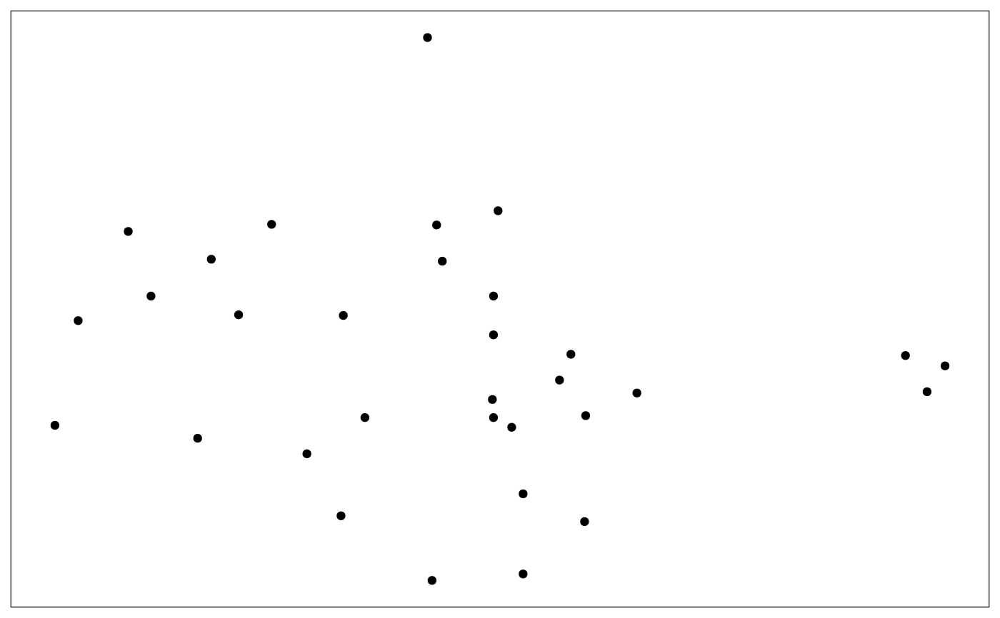
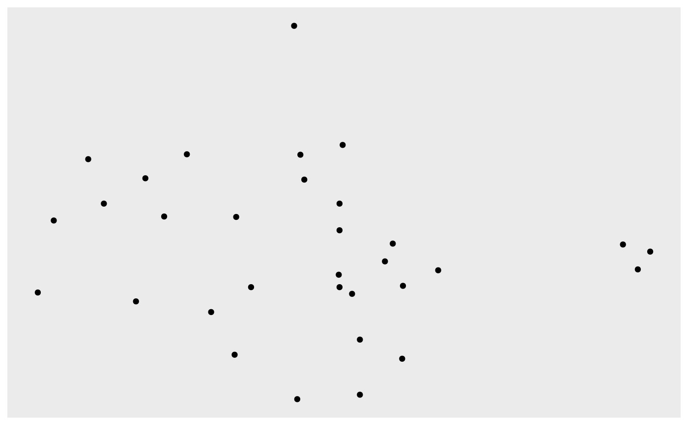

This theme is a simple wrapper around any complete theme that removes the axis text, title and ticks as well as the grid lines for plots where these have little meaning.
theme_no_axes(base.theme = theme_bw())
| base.theme | The theme to use as a base for the new theme. Defaults to
|
|---|
A modified version of base.theme
